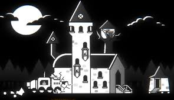
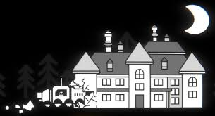
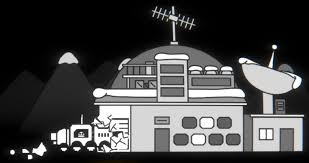
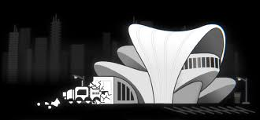

In the game R.E.P.O., levels function as a progression system that increases difficulty and alters monster behavior. The number and types of monsters change with each new level, and game mechanics like monster idle time and respawn rates become more punishing.
Monster progression by level
The game's monster spawning system scales up in difficulty, presenting a wider variety and higher quantity of monsters as you advance.
Levels 1 to 2: In the initial stages, you will encounter one Tier 1 monster and one Tier 3 monster. This can be particularly dangerous, as it's possible to face a powerful enemy like a Reaper right at the beginning.
Levels 3 to 5: The monster variety increases to one monster from each tier (Tier 1, Tier 2, and Tier 3).
Levels 6 to 8: The difficulty spikes as the number of monsters from each tier doubles.
Levels 9 to 10: You will encounter two Tier 1, three Tier 2, and two Tier 3 enemies.
Level 11 and above: The monster count reaches its peak complexity and intensity, with three Tier 3 monsters now guaranteed to spawn.
All R.E.P.O Maps

Swiftbroom Academy
A large, open map that is less cluttered than other locations. It features large doors and open spaces, which make it easier to move large items. Notable areas include cauldrons that can kill ducks for bonus cash.

Headman Manor
A more challenging map with tight, claustrophobic corridors and many gigantic valuables. This layout makes it difficult to avoid monsters, as you can easily be cornered.

McJannek Station
Known for its many tight spaces and dangerous pits. The map is made more difficult by items that are hard to transport due to their size and the presence of tricky extraction rooms, like one with a precarious plank walkway.
Museum of Human Art

A newer map with very large openings and a vertical layout, making it feel more open. While it has few pits, some items are large and difficult to transport with the cart, so it requires careful planning.